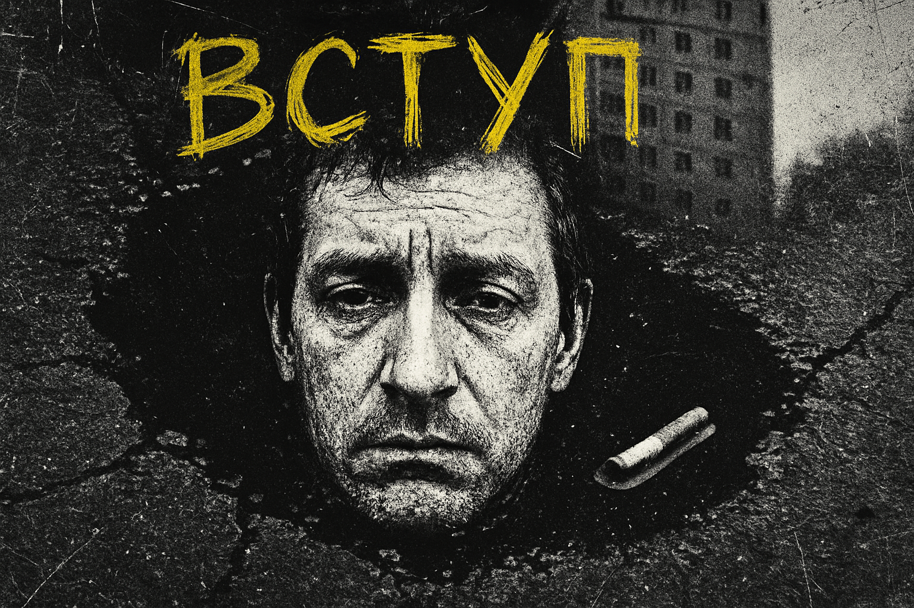

РОЗДІЛ 0: ВСТУП, АБО ЛАСКАВО ПРОСИМО В ПЕКЛО
Ти прокидаєшся. Не тому, що виспався, а тому, що сусід згори знову впустив щось важке. За вікном — сіре небо, що тисне на сірі панельки. Повітря пахне вчорашнім дощем і сьогоднішньою безнадією. Це не ранок нового дня. Це черговий дубль в п'єсі, сценарій якої ти давно забув. На кухні чекає холодна кава і невирішене питання: "Нахуя?".
Ласкаво просимо в "ПІЗДЄЦЬ".
0.1. Про що ця гра?
"ПІЗДЄЦЬ" — гра не про те, як стати героєм. Це гра про те, як залишитись людиною, коли все навколо натякає, що це — марна трата часу. Це інструмент для створення історій про маленьких людей, що намагаються знайти сенс (або хоча б не з'їхати з глузду) у великому, байдужому світі, який застиг у часі десь на околицях типового спального району.
Щоб вижити тут, треба знати місцеві правила:
- Поразка — це не кінець, а зав'язка. Найцікавіші моменти трапляються тоді, коли все йде через сраку. Ваша мета — не уникнути поразки, а зробити її незабутньою.
- Чорний гумор — це кисень. Здатність сміятися з жаху, абсурду і власної нікчемності — єдиний спосіб не потонути в цьому болоті.
- Правила — це лише рекомендації. Головне — це атмосфера і спільне створення історії. Якщо правило заважає зробити гру більш смішною чи трагічною, посилайте його нахуй.
0.2. Слово до Гравців (ПГ)
Вітаю, дійова особо. Твій персонаж, скоріш за все, помре. Або зіп'ється. Або збожеволіє. Не сприймай це як поразку. Сприймай це як неминучий фінал п'єси.
Твоє завдання — не перемогти. Твоє завдання — залишити після себе красивий шрам на обличчі цього світу. Відчайдушно борись за свою абсурдну мету, встрявай у безнадійні бійки, веди глибокі філософські бесіди з гопниками, шукай істину на дні пляшки. І пам'ятай: чим гірше для твого персонажа, тим краще для історії.
0.3. Слово до Майстра (ГМ)
Ти — режисер цього театру абсурду. Ти не бог з машини. Ти — сама машина. Іржава, гучна і непередбачувана. Твоя роль — зробити світ живим, реагуючим і безжалісно байдужим.
- Будь справедливим, але не добрим. Якщо гравець робить дурницю, наслідки мають бути відповідними.
- Слухай гравців. Найкращі ідеї народжуються з їхніх дій. Імпровізуй.
- Наповнюй світ деталями. Запах сирості в під'їзді, звук шансону з розбитого "Ланосу", фрази, почуті в черзі.
- Використовуй "Шкалу Абсурду" та "Календар Світової Скорботи", щоб світ жив і помирав навколо гравців.
РОЗДІЛ 1: ОСНОВИ ГРИ, АБО ЯК ПРАЦЮЄ ЦЕЙ МЕХАНІЗМ
1.1. ТРОЄ У ЧОВНІ, НЕ РАХУЮЧИ ПИЗДЕЦЯ
У цій п'єсі є три дійові особи. Зрозумій, хто є хто, інакше пиздець настане швидше, ніж ти очікуєш.
- Майстер (ГМ). Це не бог. Бог, якщо він і був, давно пішов звідси у творчу відпустку. ГМ — це іржавий, байдужий механізм долі. Він — голос сусідки, що свердлить тебе поглядом; він — холодна рука бюрократа, що вимагає двадцяту довідку; він — саме повітря, просякнуте запахом мокрого асфальту і розпачу.
- Гравці (ПГ). Це ви. Останні оголені нерви цього світу, що помирає. Ваші персонажі — не герої. Вони — сукупність поганих рішень, невиконаних обіцянок і однієї-єдиної, нав'язливої, як муха, ідеї, що не дає їм остаточно спитися.
- Кубик d20. Це неупереджений, безжальний сміх всесвіту, втілений у шматку пластику. Коли ти робиш щось, що може закінчитися як тріумфом, так і ганебною поразкою, ти звертаєшся до нього. Його вирок остаточний.
1.2. ОЧКИ ЗАЙОБАНОСТІ (ОЗБ) — ПАЛИВО ДЛЯ ДУШІ
Це не просто показник. Це тоненька, натягнута, як струна, нитка, що відділяє тебе від прірви істеричного реготу та бажання гризти стіни. Це твій запас сил, щоб терпіти. Коли він вичерпається, ти стаєш частиною загального фонового шуму.
Ти втрачаєш ОЗБ, коли світ тисне на тебе своєю тупою, безжальною вагою. Коли кондукторка в тролейбусі кричить на тебе, бо в неї поганий день. Коли чиновник зачиняє віконце прямо перед твоїм носом. Майстер скаже тобі, коли чергова цеглина реальності впала на твою голову. Це коштує 1 ОЗБ.
Ти витрачаєш ОЗБ, бо це твоя єдина справжня зброя. Це свідомий акт бунту. Витративши 1 ОЗБ ти можеш зробити одну з цих речей:
- Сказати "Ні": Автоматично пройти перевірку на опір соціальному чи психологічному тиску.
- Сказати "Так, блять!": Висловити все, що ти насправді думаєш, попри наслідки.
- Сціпити зуби: Зменшити будь-яку кількість отриманої шкоди (фізичної або ментальної) до мінімальної 1 одиниці
- Перекинути кубик: Зробити повторний кидок будь-якого свого d20 (але ви зобов'язані прийняти новий результат).
- Спробувати Прозріння: Заплатити ціну за спробу змінити реальність (див. Розділ 4).
1.3. КОВТОК ПОВІТРЯ ПОСЕРЕД БОЛОТА (ВІДНОВЛЕННЯ ОЗБ)
Неможливо постійно бути на межі. Навіть у цьому пеклі є миті, що дозволяють перевести дух. Раз на ігрову сесію ти можеш відновити 1 ОЗБ, якщо знайдеш час на один з цих священних ритуалів:
- Перший ковток дешевого холодного пива спекотним полуднем.
- Звук улюбленої старої пісні з пожованої касети.
- Вдалий і дотепний жарт, який змусив усіх навколо щиро заржати.
- Смак ідеального біляша на вокзалі, з'їденого стоячи.
- Безкорислива допомога комусь, хто цього не чекав.
- Споглядання чужого страждання, коли ти бачиш, як твій ворог страждає від бюрократії ще більше, ніж ти.
РОЗДІЛ 2: СТВОРЕННЯ ПЕРСОНАЖА, АБО ХТО ТИ ТАКИЙ, СУКА?
Перш ніж кинути тебе на сцену цього театру абсурду, давай визначимось, яку саме роль ти гратимеш. Забудь про ідеальних героїв. Твій персонаж — це не мармурова статуя, а тріснута панельна плита, на якій хтось нашкрябав "тут був Вася". Він — це його шрами, його борги, його дурні звички і одна велика, як діра в асфальті, трагедія, що змушує його щоранку розплющувати очі.
2.1. РОЗТИН ПОКАЖЕ (ЗДІБНОСТІ ТА ПОКАЗНИКИ)
Твоє тіло і твій дух — це зношені інструменти, якими тобі доведеться працювати. Не чекай від них багато чого.
- Здібності: Кинь 3d6 для кожної з чотирьох: СИЛА (чи можеш ти донести додому мішок картоплі?), СПРИТНІСТЬ (чи встигнеш ти перебігти дорогу на червоне?), ВИТРИВАЛІСТЬ (скільки ти протримаєшся в черзі до ЖЕКу?), ХАРИЗМА (чи повірять тобі, що ти не верблюд?).
- Очки Здоров'я (ОЗ): Це міра того, скільки ударів долі може витримати твоя тушка. Витривалість + d8.
- Очки Зайобаності (ОЗБ): Це запас твого терпіння. Священний ресурс. Харизма + d8.
2.2. ГОЛОВНИЙ БІЛЬ ТА ПОСТІЙНИЙ СВЕРБІЖ (ТРАГЕДІЯ ТА ЗВИЧКА)
Це — серце твого персонажа. Його альфа і омега. Кинь кубики і прийми свою долю.
Твоя трагедія (d8)
- Шукаєш, хто спиздив твій велосипед "Україна".
- Намагаєшся повернути жінку, яка пішла до водія маршрутки.
- Хочеш довести сусідам, що ти не верблюд.
- Збираєш гроші на поїздку в Карпати. Вже 15 років.
- Тебе переслідує привид Степана Бандери і питає, що ти зробив для України.
- Мрієш відкрити ларьок з шаурмою, але тобі постійно щось заважає.
- Пропив свою долю. Тепер шукаєш її по ломбардах.
- Тобі відома Велика Таємниця, але ти її забув з похмілля.
Твоя шкідлива звичка (d6)
- Лузгати насіння. Завжди і всюди.
- Говорити сам з собою. Іноді сперечатись.
- Постійно позичати гроші "до завтра".
- Розповідати несмішні анекдоти.
- Колекціонувати кришечки від пива.
- Вірити у все, що кажуть по телевізору.
2.3. ХТО ТИ ПО ЖИЗНІ (АРХЕТИПИ)
Кожен у цьому світі виживає як може. Обличчя стираються, але маски залишаються. Обери одну з цих масок. Вона дасть тобі одну унікальну здатність — твій фірмовий спосіб плювати проти вітру, твій єдиний туз в рукаві засаленої куртки.
Інтелігент
Він читав Канта, але запиває його портвейном "Три Топори". Його кухня, завалена книжками і недопалками, — це одночасно його фортеця і в'язниця. Він бачить усю глибину світового пиздеця, і ця мудрість робить його нестерпним для оточуючих і, в першу чергу, для себе самого. Його зброя — слово, і він володіє ним, як п'яний майстер кунг-фу.
Особлива здатність: "Душнила"
Витратьте 1 ОЗБ, щоб почати нудний, екзистенційний монолог про тлінність буття. Ваш опонент повинен пройти перевірку Харизми (РС 14) або впасти в ступор і втратити свій наступний хід, намагаючись зрозуміти, до чого тут Шопенгауер.
Відьма
Вона бачить невидиме у видимому: знаки в тріщинах на асфальті, майбутнє в кавовій гущі, ліки в бур'яні біля під'їзду. Люди її бояться, шепочуться за спиною, але вночі стукають у її двері, просячи приворожити чоловіка чи наслати понос на сусідку. Її сила — в знанні того, що цей світ значно дивніший і страшніший, ніж здається.
Особлива здатність: "Зілля з підніжного корму"
Раз на день може зварити зілля з того, що знайшла під ногами — подорожника, дохлого голуба, сигаретних недопалків. Гравець має описати ритуал і інгредієнти. Ефект зілля визначає Майстер (може вилікувати, отруїти або викликати дуже дивні галюцинації).
Пацан з району
Його територія — цей двір, його уніформа — спортивний костюм "Абібас" і гострий погляд. Він живе за кодексом вулиці, де є "свої" і "чужі", "по-людськи" і "не по понятіям". Може здатися примітивним, але його розуміння лояльності, боргу і справедливості набагато міцніше за будь-які закони, написані на папері.
Особлива здатність: "Є подзвонить?"
Раз на день, опинившись у скруті, він може "кинути клич". При успішній перевірці Харизми (РС 14), на допомогу приходять d4 таких самих пацанів. Вони допоможуть у бійці, але тепер ти винен їм "борг", який вони обов'язково прийдуть забрати.
Далекобійник
Він бачив усю країну через лобове скло своєї фури, що пахне дизелем, дешевою кавою і самотністю. Для нього дім — це кабіна. Він знає всі ями на трасі Е-95, всі придорожні кафе з найкращим борщем і всі способи "порішати" з ментами за двадцятку. Він — мовчазний філософ асфальту.
Особлива здатність: "Дорожня мудрість"
Раз на сесію може заявити, що він "вже бував у схожій ситуації" або "знає тут одного". Він отримує одну корисну, конкретну інформацію від Майстра, пов'язану з поточною проблемою або локацією.
Ділок
Він — людина-телефон. Він знає людей, які знають людей, які можуть "дістати". Його бізнес — це інформація, зв'язки і постійне балансування на межі закону та повного пиздеця. Він завжди в русі, завжди на нервах, завжди бачить у будь-якій ситуації можливість заробити або вляпатись у ще більшу халепу.
Особлива здатність: "Є один варіант..."
Раз на сесію може спробувати дістати будь-який не унікальний предмет або інформацію. Він робить перевірку Харизми (РС 16). При успіху він знаходить те, що треба, але завжди є побічний ефект або борг перед якоюсь сумнівною особистістю.
Лікар
Він пам'ятає часи, коли давав клятву Гіппократа, але тепер дає перевагу клятвам на адресу міністерства охорони здоров'я. Від нього тхне спиртом і цинізмом, але його руки, хоч і тремтять з похмілля, ще пам'ятають, як врятувати життя за допомогою синьої ізоляційної стрічки, горілки і міцного слова.
Особлива здатність: "І так сойдьот!"
Може спробувати стабілізувати персонажа при смерті або вилікувати d6 ОЗ, використовуючи будь-які підручні матеріали (горілка замість антисептика, стара футболка замість бинтів). Перевірка Спритності (РС 14). При провалі він завдає 1 шкоди.
2.4. СТАРТОВИЙ ШМУРДЯК
Ти починаєш ні з чим. Або майже ні з чим. Ось твій стартовий набір для виживання.
- Одяг: Те, що було на тобі вчора. Ймовірно, старі джинси, светр і пошарпана куртка.
- Зброя: Ти маєш щось, що завдає d4 шкоди. Це може бути міцний кулак, іржавий ніж або шматок труби.
- Гроші: Кинь d20. Це всі твої гроші в гривнях. На пиво і сигарети вистачить. Можливо.
- Випадковий мотлох: Кинь d20 за таблицею нижче і дізнайся, що ще завалялося у тебе в кишенях.
Що в кишенях? (d20)
| d20 | Результат |
|---|---|
| 1 | Нічого, крім дірок і крихт. |
| 2 | Жменя насіння соняшника. |
| 3 | Один мокрий, брудний носок. |
| 4 | Зім'ятий лотерейний білет з минулого року. Він не виграв. |
| 5 | Стара, вицвіла фотографія невідомої жінки з дуже втомленими очима. |
| 6 | Ключ від невідомого замка. |
| 7 | Половина пачки найдешевших цигарок "Прима". |
| 8 | Іржавий складаний ніж, що ледве відкривається. |
| 9 | Пом'ята іконка з ликом невідомого святого, що осудливо на тебе дивиться. |
| 10 | d6+2 гривні дріб'язком. |
| 11 | Порожня пляшка з-під горілки "Столична". |
| 12 | Записка, написана нерозбірливим почерком: "Купи хліба і молока. Цілую, мама". |
| 13 | Синя ізоляційна стрічка. Майже повний моток. Безцінна річ. |
| 14 | Один патрон від пістолета Макарова. Просто патрон, без пістолета. |
| 15 | Пошарпана колода гральних карт, не вистачає кількох. |
| 16 | Старий касетний плеєр. Батарейки давно сіли, а всередині касета гурту "Ненсі". |
| 17 | Запечатаний конверт з дивним символом, схожим на око. |
| 18 | Схема каналізаційних тунелів цього району, намальована на серветці. |
| 19 | Повна пляшка дешевого портвейну "777". |
| 20 | Вибір Майстра: Щось дивне, небезпечне або неймовірно цінне. |
2.5. ЩО ДАЛІ? (РОЗВИТОК)
У цій грі ти не стаєш сильнішим. Ти або ламаєшся, або стаєш ще більш кривим, але міцним. Якщо твій персонаж переживе фінал однієї великої історії, він зміниться. Це не рівень. Це новий шрам. Ти можеш обрати один з трьох шляхів:
- Пережити Трагедію: Ти виконав свою мету. Відчуй мить полегшення (твій максимум ОЗБ назавжди збільшується на 1). А тепер отримай нову, ще більш їбануту Трагедію. Бо святе місце пустим не буває.
- Загартуватися в Пеклі: Те, що нас не вбиває, робить нас злішими. Ти можеш додати +1 до будь-якої своєї характеристики.
- Обрости зв'язками: Ти більше не сам. Ти отримуєш нового постійного союзника або боржника. Це могутній ресурс, який обов'язково повернеться, щоб вкусити тебе за сраку.
РОЗДІЛ 3: ПРАВИЛА ГРИ, АБО ЯК ПЛЮНУТИ ПРОТИ ВІТРУ І НЕ ЗАБРИЗГАТИ ШТАНИ
У цьому світі є свої закони. Більшість з них неписані, і про них ти дізнаєшся, коли буде вже запізно. Але є кілька фундаментальних принципів, що визначають, наскільки боляче тобі буде падати.
3.1. СПРОБА І ПОКАРАННЯ (ПЕРЕВІРКИ ТА МОДИФІКАТОРИ)
Кожного разу, коли ти намагаєшся зробити щось, що може не вийти — виламати двері до підвалу, переконати таксиста їхати по лічильнику, влучити пляшкою в голову гопнику — ти кидаєш виклик байдужій реальності. Це називається перевірка.
Ти береш d20, кидаєш його і дивишся, що доля тобі підготувала. До цього кидка ти додаєш (або віднімаєш) свій модифікатор, який залежить від того, наскільки добре чи погано твій персонаж розбирається у відповідній сфері.
Забудь про складні розрахунки. Є лише три стани:
- Значення характеристики 3-6 (Жахливо): Модифікатор -2. Ти в цьому повний профан.
- Значення характеристики 7-14 (Посередньо): Модифікатор +0. Ти як усі. Нормальний.
- Значення характеристики 15-18 (Талановито): Модифікатор +2. Це єдине, що в тебе в житті виходить по-справжньому добре.
Результат кидка з модифікатором ти порівнюєш з Рівнем Складності (РС) — числом, що означає, наскільки сильно світ чинить опір твоїм намірам.
РС 12 (Нормально), РС 14 (Складно), РС 16 (Дуже складно), РС 18 (Майже неможливо).
3.2. МАХАЧ, АБО МИСТЕЦТВО ОТРИМУВАТИ ПО ЄБАЛУ
Рано чи пізно слова закінчуються. Бійка тут — це не витончений танок, а незграбна, брудна і швидка справа.
- Ініціатива: Кинь d6. При 1-3 першими б'ють вони. При 4-6 — першим б'єш ти.
- Атака та Захист: Ти кидаєш d20 + свій модифікатор (Сили або Спритності). Результат — це РС для захисту опонента. Він кидає d20 + свій модифікатор Спритності. Якщо його результат дорівнює або перевищує твій, він ухилився.
- Сліпа удача та закон підлості (Крити та Провали):
- Натуральне 20 в атаці: Автоматичне влучання. Ти завдаєш подвійної шкоди і ворог повинен негайно пройти перевірку Моралі.
- Натуральне 20 в захисті: Ти ухилився і можеш негайно провести контратаку.
- Натуральна 1 в атаці: Твоя зброя ламається, або наступна атака по тобі автоматично влучає.
- Натуральна 1 в захисті: Ти отримуєш подвійну шкоду.
3.3. ПЕРЕПАЛКА, АБО ВІЙНА ЗА КУХОННИМ СТОЛОМ
Справжні битви тут відбуваються на словах. Суперечка з чиновником може бути страшнішою за бійку з трьома гопниками.
- Поле бою: Твої Очки Зайобаності (ОЗБ) проти Моралі твого опонента.
- Зброя: Твоя Харизма (і її модифікатор).
- Механіка: Ти "тиснеш" на опонента — кричиш, благаєш, погрожуєш. Це протиставний кидок d20 + твій модифікатор Харизми проти кидка опонента.
- Наслідки: Якщо твоя взяла, НПЦ втрачає 2 пункти Моралі. Якщо твоя не взяла, ти втрачаєш 1 ОЗБ.
- Фінал: Коли Мораль НПЦ падає до 0, він ламається. Коли твої ОЗБ падають до 0, ламаєшся ти.
3.4. КОЛИ ТИ ЗЛАМАНИЙ (НАСЛІДКИ)
Це не кінець гри. Це кульмінація. Ти довів себе до межі, і тепер реальність вирішує, який шрам залишити на твоїй душі та тілі.
Коли Очки Здоров'я = 0, кинь d6:
- Труп. Просто і безславно. Кінець п'єси.
- Смертельна рана. Ти стікаєш кров'ю. Помреш за d4 години без допомоги.
- Важке каліцтво. Втрата кінцівки або ока. Встаєш з 1 ОЗ, назавжди змінений.
- Контузія. Світ тепер завжди трохи пливе перед очима. Встаєш з d4 ОЗ, але отримуєш постійний штраф -2 до Спритності.
- Пам'ятний шрам. Твоє обличчя тепер — карта твоїх поразок. Встаєш з d4 ОЗ, але отримуєш постійний штраф -2 до Харизми.
- "Ти що, впав?" Ти дивом приходиш до тями з d6 ОЗ, але розумієш, що поки ти валявся, хтось спиздив усе твоє майно, крім однієї, найбезглуздішої речі.
Коли Очки Зайобаності = 0, кинь d6:
- Запій. Єдиний вихід — на дні пляшки. Ти повинен негайно знайти і вжити будь-який алкоголь.
- Філософський ступор. Ти "зависаєш" і не можеш діяти до кінця поточної сцени. Поки твої товариші розгрібають лайно, ти стоїш і дивишся в одну точку.
- Паранойя. Вони всі змовилися. Ти нікому не довіряєш протягом доби.
- Немотивована агресія. Остання крапля впала. Ти кидаєшся на найближчу живу істоту.
- Нова трагедія. Стара проблема здається вже неважливою. Ти забуваєш свою стару ціль і отримуєш нову, ще більш безглузду.
- Просвітлення. Ти раптом розумієш, що все — хуйня. Відновлюєш d6 ОЗБ, але назавжди отримуєш новий дивний недолік.
РОЗДІЛ 4: ЧУДЕСА ТА ЄБАНІНА (МАГІЯ)
4.1. ГЛЮК У МАТРИЦІ (КОНЦЕПЦІЯ)
У цьому світі немає місця для вогняних куль та чарівних паличок. Забудь про це. "Магія" тут — це не дар. Це хвороба. Це той момент, коли твій розум, виснажений до краю, натягнутий, як струна, раптом входить у резонанс із хворою, вмираючою реальністю. Це називається Прозріння.
Це не ти керуєш світом. Це ти на мить бачиш, наскільки він зламаний, і смикаєш за ниточку, що стирчить. Ти бачиш глибокі, фундаментальні істини: що гравітація — це просто колективна домовленість, що бюрократія має свою мову, незрозумілу смертним, що тарган у тебе на кухні бачив більше, ніж ти можеш собі уявити.
Будь-хто може спробувати це зробити. Не треба бути обраним. Треба бути достатньо доведеним до ручки, щоб ризикнути останніми залишками здорового глузду.
4.2. ЦІНА ЗА ПОГЛЯД ЗА ЗАВІСУ (ПРАВИЛА ПРОЗРІНЬ)
Кожна спроба докричатися до всесвіту має свою ціну. І платити ти будеш найціннішим, що в тебе є.
- Плата за спробу: Щоб навіть спробувати змусити реальність прогнутися, ти повинен спалити шматок своєї душі. Ти негайно і безповоротно витрачаєш 1 Очко Зайобаності (ОЗБ). Це плата за квиток, незалежно від того, чи відбудеться вистава.
- Перевірка активації: Після того, як ти заплатив, ти робиш відчайдушну спробу — кидок Харизми проти РС 12.
- Коли всесвіт відповідає пошепки (Критичне Прозріння): Якщо на d20 випадає 20, відбувається диво. Сама реальність йде тобі назустріч. Прозріння спрацьовує з непередбачуваним, посиленим ефектом (кинь за таблицею нижче), і ти не витрачаєш ОЗБ за цю спробу.
Примітка: унікальні здібності архетипів, як-от "Зварити зілля" у Відьми, — це їхні власні ритуали. Вони не є Прозріннями і живуть за своїми правилами.
4.3. КОЛИ ПРІРВА ДИВИТЬСЯ У ВІДПОВІДЬ (ТАБЛИЦЯ КРИТИЧНОГО УСПІХУ, D6)
| d6 | Результат |
|---|---|
| 1 | Колективне несвідоме: Твоя думка стає вірусом. Ефект поширюється не тільки на ціль, але й на d4 випадкових істот навколо. Твій "Заговор на понос" раптово вражає всю чергу в аптеці. |
| 2 | Тріщина в реальності: Прозріння таке потужне, що сама реальність реагує. Асфальт зітхає, ліхтарний стовп плаче іржею, портрет на стіні підморгує. Це може випадково розкрити таємницю або просто бути дуже дивним. |
| 3 | Ідеальне виконання: Ти не просто зробив це, ти зрозумів, як. Ефект спрацьовує бездоганно. Ти настільки задоволений собою, що відновлюєш 1 ОЗБ. |
| 4 | Перманентний слід: Ефект стає постійним, але з дивацтвом. Чиновник тепер назавжди впадає в ступор, коли бачить тебе. Тарган Семен вирішує залишитись з вами і стати членом родини. |
| 5 | Джерело Сили: Ти на мить стаєш не просто користувачем, а втіленням цього Прозріння. Ти розумієш фундаментальний принцип, що лежить в його основі. Отримуєш перевагу (+2) на одну майбутню перевірку, пов'язану з цим. |
| 6 | Вибір Майстра: Подвійна Ціна. Стається щось неймовірно гарне, але й щось настільки ж погане. Ти викликав дільничного, і він заарештував твого ворога... але це той самий дільничний, якому ти винен гроші. |
4.4. КОРОТКИЙ ПЕРЕЛІК ЗБОЇВ У СИСТЕМІ (СПИСОК ПРОЗРІНЬ, 2D6)
Це лише найпоширеніші тріщини у тканині буття, які навчилися помічати нещасні. Кидай 2d6 і молись, щоб це було щось корисне.
| 2d6 | Результат Прозріння |
|---|---|
| 2 | Абсолютна тиша. На мить усі звуки в радіусі 10 метрів зникають. Не тільки розмови, а й гудіння холодильника, шум вітру, гуркіт машин. У цій дзвінкій тиші всі, крім тебе, повинні пройти перевірку ОЗБ (РС 12) або втратити свій наступний хід, приголомшені. |
| 3 | Голос із труби. З найближчої труби, радіатора або водостоку лунає чіткий, але втомлений голос, що вимовляє одне-єдине слово — загадкову, але корисну підказку щодо поточної ситуації. |
| 4 | Резонанс порожнечі. Ти стукаєш по порожній пляшці, черепу або своїй голові. Всі в радіусі 10 метрів повинні пройти перевірку ОЗБ (РС 12) або втратити 1 Очко Зайобаності від нестерпної туги. |
| 5 | Благословення Баби Галі. Ти починаєш сипати добірними народними прокльонами. Ворог, на якого ти дивишся, повинен пройти перевірку Харизми (РС 12) або втікає в сльозах, згадуючи всі свої дитячі травми. |
| 6 | Сила наїбалова. Ти раптом розумієш, чого хоче людина навпроти тебе. Ти отримуєш перевагу (кидаєш 2d20 і береш кращий результат) на наступну перевірку обману, маніпуляції або торгівлі. |
| 7 | Ефект розбитої пляшки. Ти на мить показуєш цілі, як насправді влаштований цей жахливий світ. Наступна перевірка здібності, яку ця ціль зробить, проходить з РС 16, бо її віра в реальність похитнулася. |
| 8 | Матеріалізація таргана. Ти створюєш одного великого, сумного і мудрого таргана на ім'я Семен. Він з'являється у тебе на плечі, дає одну загадкову, але корисну пораду ("не вір сантехніку"), після чого йде у своїх справах. |
| 9 | Сльози Бюрократа. Ти починаєш впевнено цитувати параграфи з неіснуючих законів та постанов. Будь-який чиновник або представник влади впадає в ступор на d4 раунди, намагаючись знайти відповідний циркуляр. |
| 10 | Гравітація – це думка буржуазії. Ти можеш на один раунд ігнорувати закони фізики. Ходити по стінах, стелі або зробити один неймовірний стрибок. |
| 11 | Виклик дільничного. З нізвідки з'являється втомлений життям міліціонер. Він не допомагає, але його присутність змушує всіх навколо поводитися "пристойно" протягом хвилини, що може зупинити бійку або допит. Після цього він так само раптово зникає. |
| 12 | Поетична правда. На одну хвилину ти стаєш геніальним поетом. Усе, що ти кажеш, автоматично сприймається як істина, за умови, що це заримовано. Ти можеш переконати будь-кого у будь-чому, поки тримаєш ритм. |
РОЗДІЛ 5: ІНСТРУМЕНТИ МАЙСТРА, АБО ЯК ПРАВИЛЬНО ЗАСИПАТИ СКЛО У ВЕНТИЛЯТОР
Ти — Майстер. Ти — не бог. Ти — слюсар-сантехнік цього світу. Твоя задача — не створити ідеальний механізм, а підкручувати іржаві вентилі, спостерігаючи, де саме прорве трубу. Ти — режисер, що показує акторам декорації, а потім підпалює театр. Ось твої інструменти. Користуйся ними з холодною жорстокістю і справедливою байдужістю.
5.1. ПОРОДИ ПЕКЛА (АБСУРДНИЙ БЕСТІАРІЙ)
Твої вороги — це не орки та дракони. Це породження самої реальності, її гнійники та метастази. Це соціальні функції, доведені до абсурду.
Гопник (3-5 особин): Хижаки асфальтових джунглів. Існують у зграях. ОЗ: 4, Мораль: 7. Їхня атака — це не тільки удар кастетом (d4 шкоди), але й психологічний тиск ("Є подзвонить?"), що висмоктує 1 ОЗБ у жертви, яка не змогла правильно відповісти.
Сумний мент: Втілення втомленої державної машини. ОЗ: 8, Мораль: 9, Броня: 1. Його кийок (d4 шкоди) — це продовження його байдужості. Його головна зброя — нудна перевірка документів, що гарантовано коштує 1 ОЗБ.
Баба з базару: Елементаль українського ринку. ОЗ: 6, Мораль: 10. Її прокльони б'ють прямо по душі (d3 ОЗБ), а авоська, наповнена цеглою та образою на весь світ, завдає d4 шкоди.
Чиновник: Несмертний аватар бюрократії. ОЗ: 10, Мораль: 12. Його не можна атакувати фізично без трьох довідок з мокрими печатками. Його єдина атака — фраза "Принесіть довідку", що спалює d4 ОЗБ.
Перевірка Моралі (Коли дух зламано)
Не всі готові померти за місце на парковці. Коли падає перший з ворогів, їхній лідер, або половина групи, їхній бойовий дух може похитнутися. Кинь 2d6. Якщо результат більший за Мораль ворога, він зламаний і реагує відповідно до свого типу:
- Гопники: Найімовірніше, втікають. Найслабший може спробувати торгуватися.
- Менти, охоронці: Відступають для перегрупування або здаються, якщо оточені.
- Чиновники, консьєржки: "Бюрократична капітуляція" — починають погрожувати скаргами, поліцією, зв'язками.
- Фанатики, звірі: "Тупа лють" — б'ються до останнього, можливо, з більшою люттю (+1 до шкоди).
5.2. ШМУРДЯК, АБО ЧИМ ЗАХИЩАТИСЯ ВІД РЕАЛЬНОСТІ
У цьому світі немає сяючих обладунків. Є лише мотлох, що допомагає тобі протриматися ще один день.
Зброя
- Кулак / Нога: d2 шкоди
- Ніж / "Розочка": d4 шкоди
- Монтіровка / Кийок: d6 шкоди
- Сокира / Важка палиця: d8 шкоди
Броня
- Легка (ватник, шкірянка): -d2 шкоди
- Середня (старий бронік): -d4 шкоди
- Важка (саморобна): -d6 шкоди
5.3. ГОДИННИК СУДНОГО ДНЯ
Світ не стоїть на місці. Він повільно, але впевнено котиться у прірву. Ти, як Майстер, фіксуєш це двома способами: один — локальний, інший — глобальний. Вони — цокання годинника, що відміряє час до кінця п'єси.
Шкала Абсурду: Локальний термометр божевілля
Кожен район, кожен під'їзд, кожна генделик має власну невидиму **Шкалу Абсурду** (умовно від 0 до 10). На початку вона стоїть на 5.
- Підвищення Шкали: Коли гравці роблять щось дике, нелогічне, творче або просто сюрреалістичне, ти підвищуєш Шкалу на 1. Вони намагалися підкупити чиновника дохлим котом? +1 до Абсурду.
- Зниження Шкали: Коли гравців перемагає система, нудьга і сіра реальність, ти знижуєш Шкалу на 1. Вони покірно зібрали всі 15 довідок? -1 до Абсурду.
- Ефекти: На критичних позначках (7+ або 3-) активуй випадкові події з відповідних таблиць (див. Розділ 6). Високий рівень робить світ дивним і непередбачуваним. Низький — гнітючим і нестерпно нудним.
Календар Світової Скорботи: Глобальний годинник апокаліпсису
Це не просто події. Це цвяхи в труну цього світу. На початку кожної ігрової сесії кидай d66 за таблицею "Нещасть" і оголошуй, яка нова біда спіткала всіх. Цей ефект постійний і невідворотний. Сьогодні відключили гарячу воду. Завтра небо стане жовтим. Гравці безсилі це змінити, вони можуть лише спостерігати, як світ навколо них повільно помирає.
5.4. ЕКОНОМІКА ДНА, АБО БОРГ ЯК ЄДИНА ВАЛЮТА
Гроші — це папірці. За них можна купити хіба що сигарети, пиво та квиток на тролейбус. Все по-справжньому цінне — інформація, допомога, унікальний предмет, протекція — купується і продається за єдину стабільну валюту: Борг.
- Як це працює: Коли гравець просить про серйозну послугу ("порішай мені довідку", "дізнайся, де живе цей мудак"), він не платить гроші. Він залазить у борги. Коли він надає послугу комусь важливому, він робить когось своїм боржником.
- Двигун сюжету: Борги — це найкращий інструмент для ГМа. Одного дня до гравця прийдуть і попросять "повернути борг". І відмовитись буде неможливо. Це може бути прохання щось вкрасти, когось залякати або просто постояти "на шухері". Це завжди втягує гравців у нову, ще глибшу сраку.
5.5. Календар Світової Скорботи
На початку кожної сесії ГМ кидає 2d6 (перший — десятки, другий — одиниці) і оголошує, яка нова біда спіткала світ. Цей ефект постійний.
| d66 | Нещастя |
|---|---|
| 11 | Комунальний колапс: У всьому районі назавжди відключають гарячу воду. |
| 12 | Вічна Осінь: Сонце більше не піднімається високо. День триває лише 6 годин, решта часу — сірі сутінки. |
| 13 | Іржавий дощ: Дощі тепер залишають на всьому іржаві патьоки. Будь-який металевий предмет, залишений на вулиці, швидше псується. |
| 14 | Колективна амнезія: Усі, включно з гравцями, забувають одну дрібну, але важливу річ (напр., як зав'язувати шнурки). |
| 15 | Бюрократична чума: З'являється новий, обов'язковий, але абсолютно безглуздий документ — "Довідка про відсутність довідок". |
| 16 | Голубина загроза: Голуби стають агресивними і починають нападати на людей, намагаючись відібрати їжу. |
| 21 | Звуковий терор: З усіх гучномовців та радіоприймачів цілодобово лунає одна й та сама тужлива радянська пісня. |
| 22 | Епідемія апатії: Усі НПЦ стають ще більш байдужими. Їхня Мораль для соціальних конфліктів збільшується на 2. |
| 23 | Закон про тишу: Виходить абсурдний указ, що забороняє розмовляти голосніше за пошепки в громадських місцях. |
| 24 | Втрачені кольори: Один з основних кольорів (напр., синій) зникає зі світу. Усі сині предмети стають сірими. |
| 25 | Тіні живуть своїм життям: Іноді тіні рухаються незалежно від об'єктів, що їх відкидають. Це просто дивно і тривожно. |
| 26 | Психічна ерозія: Всі алкогольні напої втрачають свою міцність вдвічі. Щоб напитися, потрібно вдвічі більше. |
| 31 | Навала тарганів: Таргани стають більшими, розумнішими і більше не бояться світла. |
| 32 | Інфраструктурний пиздець: Асфальт починає повільно розріджуватися, перетворюючись на в'язку чорну масу. |
| 33 | Податок на повітря: Вводять щомісячний податок на дихання. Спеціальні інспектори ходять з приладами для вимірювання. |
| 34 | Гравітаційна аномалія: Гравітація стає нестабільною. Раз на день Майстер може змусити всіх зробити перевірку Спритності, щоб не впасти. |
| 35 | Інфляція: Гроші остаточно втрачають цінність. Пляшка горілки стає новою універсальною валютою. |
| 36 | Соціальна ізоляція: Люди перестають дивитися один одному в очі. Будь-яка спроба встановити зоровий контакт вважається агресією. |
| 41 | Вічний ремонт: Головну дорогу району перекопують для "вічного" ремонту. Тепер усюди треба ходити в обхід. |
| 42 | Безсоння: Ніхто більше не може нормально спати. Всі персонажі можуть відновити лише половину ОЗ за відпочинок. |
| 43 | Туман забуття: Раз на тиждень на район опускається густий туман. Той, хто пробуде в ньому більше години, забуває щось важливе. |
| 44 | Новий харчовий стандарт: Хліб починають робити з домішками тирси. Він дешевший, але шкода від нього d2 ОЗ. |
| 45 | Занепад мови: Люди починають забувати складні слова. Усі розмови стають примітивнішими. |
| 46 | Колективна параноя: Усі починають підозрювати один одного в тому, що вони "стукачі" або "агенти". |
| 51 | Смерть сміху: Жарти перестають бути смішними. Будь-яка спроба пожартувати автоматично провалюється. |
| 52 | Паперова підемія: Всі поверхні повільно вкриваються шаром старих, нікому не потрібних оголошень та рекламних листівок. |
| 53 | Собачий суд: Безпритульні собаки збиваються у зграї і починають "судити" людей, які їх ображали. |
| 54 | Спогади про майбутнє: Людей іноді відвідують яскраві, але абсолютно хибні спогади про майбутнє, яке ніколи не настане. |
| 55 | Дзеркала брешуть: Відображення в дзеркалах та вітринах іноді показують людей на кілька секунд старшими або з виразом жаху на обличчі. |
| 56 | Остання Надія вмерла: З продажу зникає найдешевше пиво. |
| 61 | Вода пам'ятає: Вода з-під крана іноді шепоче уривки розмов людей, які колись жили в цьому будинку. |
| 62 | Зірки гаснуть: Кількість зірок на нічному небі зменшується вдвічі. |
| 63 | Зникнення музики: Уся записана музика починає повільно стиратися з носіїв. |
| 64 | Архітектурний рак: Будинки починають повільно руйнуватися, скидаючи шматки бетону та цегли. |
| 65 | Запах сірки: У повітрі з'являється ледь відчутний, але постійний запах сірки. |
| 66 | Небо змінює колір: Небо назавжди стає брудно-жовтим. Раз на день кожен повинен пройти перевірку ОЗБ (РС 12), інакше втрачає 1 очко від туги. |
5.4. КАРКАСИ КАМПАНІЙ
Кілька ідей для початку, щоб вам було з чого розпалити багаття.
Справа про проклятий котел
Концепція: Проста комунальна проблема перетворюється на сюрреалістичний квест із зануренням в історію, корупцію та алкоголізм.
Зав'язка: У будинку гравців зникає опалення. На дворі листопад. Холод — це новий ворог.
Дійові особи: Слюсар Дядя Толя (геній-алкоголік), голова ОСББ Петро Семенович (дрібний корупціонер), колекціонер "Антиквар" (параноїдальний дивак).
Акт I: Гравці дізнаються, що котел — рідкісна німецька модель часів Другої світової, а для ремонту потрібен унікальний "вентиль «Цеппелін-7»". Дядя Толя згоден допомогти, але лише за пляшку рідкісного коньяку.
Акт II: Єдиний вентиль знаходиться у "Антиквара", який вимагає в обмін не гроші, а щось абсурдне. Тим часом Петро Семенович наймає гопників, щоб ті остаточно зламали котел і "пробили" закупівлю нового за завищеною ціною.
Акт III (Кульмінація): Тристороння зустріч у підвалі. Гравці з вентилем, Дядя Толя (можливо, п'яний) та гопники Семеновича. Гравцям доводиться робити вибір: встановити вентиль для блага мешканців, продати його Антиквару за великі гроші або домовитись з Семеновичем про "відкат". Кожен вибір має гіркі наслідки.
Останні гастролі гурту «Смерть Енгельса»
Концепція: Пошукова місія у світі міського андеграунду, що перетворюється на екзистенційну драму про втрачені надії та старі образи.
Зав'язка: Таємничий Ділок на ім'я Сєва наймає гравців, щоб ті знайшли і зібрали разом членів легендарного, але давно розпавшогося панк-гурту для одного-єдиного концерту-возз'єднання.
Дійові особи: Сєва (цинічний організатор), Ігор "Поет" (колишній фронтмен, тепер Інтелігент-алкоголік), "Мара" (колишня басистка, тепер містична Відьма), "Стус" (колишній барабанщик, тепер Пацан з району).
Акт I: Пошук учасників гурту. Кожен з них глибоко загруз у власному пиздеці. Поета треба витягати з запою, Мара не хоче повертатись до "світської суєти", а Стус вважає, що його "кинули" і вимагає компенсації. Кожен етап — це соціальний конфлікт.
Акт II: Гравці зібрали гурт, але виникає нова проблема. Учасники ненавидять один одного і не можуть провести жодної репетиції без бійки. До того ж, з'являється конкуруюча фракція (наприклад, релігійні активісти, що хочуть зірвати "сатанинський" концерт, або інший продюсер, що намагається переманити Поета).
Акт III (Кульмінація): День концерту. Апаратура не працює, Поет знову п'яний, на вході — бійка. Гравці повинні обрати: спробувати провести ідеальний концерт, ризикуючи всім; дозволити йому перетворитися на легендарний хаос, який увійде в історію як найгучніший провал; або просто "кинути" всіх і втекти з грошима Сєви. Фінал — це не оплески, а відлуння останнього акорду в порожньому залі.
РОЗДІЛ 6: ДОДАТКИ ТА ЗАВІСА
6.1. ГОЛОСИ В ГОЛОВІ (ДЖЕРЕЛА НАТХНЕННЯ)
Якщо ти читаєш це, значить, цей світ тебе зацікавив. Можливо, ти впізнав у ньому щось знайоме. Це тому, що він зітканий з голосів, які лунали до нас з пожовклих сторінок, старих касет та подряпаних екранів. Якщо хочеш зрозуміти цей Пиздець глибше, прислухайся до них.
Книги, що пахнуть розпачем:
- Лесь Подерв'янський. П'єси.
- Сергій Жадан. Ворошиловград, Месопотамія.
- Юрій Андрухович. Рекреації, Перверзія.
- Чарльз Буковскі. Поштамт.
Кіно, що вчить бачити красу в іржі:
- "Люксембург, Люксембург", "Мої думки тихі"
- "Дике поле"
- Фільми Акі Каурісмякі
Музика для похмільного ранку:
- Брати Гадюкіни
- Воплі Відоплясова (ранні)
- Хамерман Знищує Віруси
- Tom Waits
Ігри, що нагадують про тлінність:
- Disco Elysium
- S.T.A.L.K.E.R.
- Pathologic
6.2. ГЕНЕРАТОРИ ХАОСУ (ВИПАДКОВІ ТАБЛИЦІ)
Коли не знаєш, що робити, — кидай кубик. Всесвіт підкаже.
Випадкові Зустрічі на Районі (d10)
- Два алкаша сперечаються про Канта біля сміттєвих баків.
- Зграя безпритульних собак ділить дохлого голуба.
- Сумна процесія свідків Єгови, що роздають брошури про кінець світу.
- Дільничний мент ліниво перевіряє документи у немісцевого.
- Маленька дівчинка малює крейдою на асфальті дуже тривожні фігури.
- Водій розбитого "Ланоса" намагається завестися, поки з магнітоли кричить шансон.
- Бабуся поливає квіти на балконі і щось бурмоче собі під ніс про сатаністів.
- Група підлітків мовчки сидить на гойдалці і лузгає насіння.
- Загублена дитина стоїть і плаче. Ніхто не звертає уваги.
- Ти бачиш людину, яка виглядає точнісінько як ти, але одягнена трохи краще. Вона зникає за рогом.
Плітки, Почуті в Черзі (d8)
- "...а Семенівна, кажуть, з сатаною зв'язалася, тому в неї помідори такі великі ростуть..."
- "...новий голова ЖЕКу нібито не людина зовсім, у нього очі як у ящірки..."
- "...кажуть, у старій котельні вночі хтось дивні ритуали проводить, музика звідти грає не наша..."
- "...мій кум бачив, як бомж з вокзалу розмовляв з голубами, і ті йому відповідали..."
- "...у 12-й квартирі знову світло блимає, хоча там вже десять років ніхто не живе..."
- "...всі коти з нашого двору кудись зникли за одну ніч..."
- "...кажуть, якщо випити воду з того старого колодязя, можна побачити свою смерть..."
- "...цей далекобійник, що тут зупиняється, возить не звичайний вантаж, а щось дуже дивне..."
6.3. КОМУ СКАЗАТИ "ДЯКУЮ"
Ця п'єса не була б написана без тих, хто дав нам мову та інструменти. Тому ми піднімаємо цей гранований стакан за:
- Леся Подерв'янського, за те, що навчив нас бачити епічну трагедію в побутовому абсурді і дав нам слова, щоб описати цей світ.
- Pelle Nilsson та Johan Nohr (авторів MÖRK BORG), за те, що показали, як створити прості, які я безсоромно адаптував.
6.4. ЗАВІСА
Ось і все. Декорації розібрано, світло гасне. Ти тримаєш у руках не просто правила, а запрошення. Запрошення створити власну історію про маленьких людей, що намагаються не збожеволіти у великому, байдужому світі.
Грайте чесно. Брешіть багато. Створюйте власні легенди, які потім будете розповідати в генделиках. Смійтеся з жахливого і плачте від смішного. Це ваша п'єса, і тільки вам вирішувати, чи буде це трагедія, комедія, чи просто черговий кривавий фарс.
І пам'ятайте: виходу немає. Але є ларьок за рогом. Можливо, він ще працює.
Кінець п'єси.
Завіса.
РОЗДІЛ 7: ЛИСТ ПЕРСОНАЖА
Заповнюй прямо тут або роздрукуй. Це твій документ, твоя доля, твоя епітафія.
АРКУШ ПЕРСОНАЖА
ПІЗДЄЦ: Рольова гра
Особова справа №
ЗДОРОВ'Я (ОЗ)
ЗАЙОБАНІСТЬ (ОЗБ)
Бо життя — це не RPG, а survival horror.